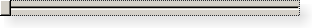

QSlider Class
The QSlider widget provides a vertical or horizontal slider. More...
| Header: | #include <QSlider> |
| CMake: | find_package(Qt6 REQUIRED COMPONENTS Widgets) target_link_libraries(mytarget PRIVATE Qt6::Widgets) |
| qmake: | QT += widgets |
| Inherits: | QAbstractSlider |
Public Types
| enum | TickPosition { NoTicks, TicksBothSides, TicksAbove, TicksBelow, TicksLeft, TicksRight } |
Properties
- tickInterval : int
- tickPosition : TickPosition
Public Functions
| QSlider(QWidget *parent = nullptr) | |
| QSlider(Qt::Orientation orientation, QWidget *parent = nullptr) | |
| virtual | ~QSlider() |
| void | setTickInterval(int ti) |
| void | setTickPosition(QSlider::TickPosition position) |
| int | tickInterval() const |
| QSlider::TickPosition | tickPosition() const |
Reimplemented Public Functions
| virtual bool | event(QEvent *event) override |
| virtual QSize | minimumSizeHint() const override |
| virtual QSize | sizeHint() const override |
Protected Functions
| virtual void | initStyleOption(QStyleOptionSlider *option) const |
Reimplemented Protected Functions
| virtual void | mouseMoveEvent(QMouseEvent *ev) override |
| virtual void | mousePressEvent(QMouseEvent *ev) override |
| virtual void | mouseReleaseEvent(QMouseEvent *ev) override |
| virtual void | paintEvent(QPaintEvent *ev) override |
Detailed Description

The slider is the classic widget for controlling a bounded value. It lets the user move a slider handle along a horizontal or vertical groove and translates the handle's position into an integer value within the legal range.
QSlider has very few of its own functions; most of the functionality is in QAbstractSlider. The most useful functions are setValue() to set the slider directly to some value; triggerAction() to simulate the effects of clicking (useful for shortcut keys); setSingleStep(), setPageStep() to set the steps; and setMinimum() and setMaximum() to define the range of the scroll bar.
QSlider provides methods for controlling tickmarks. You can use setTickPosition() to indicate where you want the tickmarks to be, setTickInterval() to indicate how many of them you want. the currently set tick position and interval can be queried using the tickPosition() and tickInterval() functions, respectively.
QSlider inherits a comprehensive set of signals:
| Signal | Description |
|---|---|
| valueChanged() | Emitted when the slider's value has changed. The tracking() determines whether this signal is emitted during user interaction. |
| sliderPressed() | Emitted when the user starts to drag the slider. |
| sliderMoved() | Emitted when the user drags the slider. |
| sliderReleased() | Emitted when the user releases the slider. |
QSlider only provides integer ranges. Note that although QSlider handles very large numbers, it becomes difficult for users to use a slider accurately for very large ranges.
A slider accepts focus on Tab and provides both a mouse wheel and a keyboard interface. The keyboard interface is the following:
- Left/Right move a horizontal slider by one single step.
- Up/Down move a vertical slider by one single step.
- PageUp moves up one page.
- PageDown moves down one page.
- Home moves to the start (minimum).
- End moves to the end (maximum).
See also QScrollBar, QSpinBox, QDial, and Sliders Example.
Member Type Documentation
enum QSlider::TickPosition
This enum specifies where the tick marks are to be drawn relative to the slider's groove and the handle the user moves.
| Constant | Value | Description |
|---|---|---|
QSlider::NoTicks | 0 | Do not draw any tick marks. |
QSlider::TicksBothSides | 3 | Draw tick marks on both sides of the groove. |
QSlider::TicksAbove | 1 | Draw tick marks above the (horizontal) slider |
QSlider::TicksBelow | 2 | Draw tick marks below the (horizontal) slider |
QSlider::TicksLeft | TicksAbove | Draw tick marks to the left of the (vertical) slider |
QSlider::TicksRight | TicksBelow | Draw tick marks to the right of the (vertical) slider |
Property Documentation
tickInterval : int
This property holds the interval between tickmarks
This is a value interval, not a pixel interval. If it is 0, the slider will choose between singleStep and pageStep.
The default value is 0.
Access functions:
| int | tickInterval() const |
| void | setTickInterval(int ti) |
See also tickPosition, singleStep, and pageStep.
tickPosition : TickPosition
This property holds the tickmark position for this slider
The valid values are described by the QSlider::TickPosition enum.
The default value is QSlider::NoTicks.
Access functions:
| QSlider::TickPosition | tickPosition() const |
| void | setTickPosition(QSlider::TickPosition position) |
See also tickInterval.
Member Function Documentation
[explicit] QSlider::QSlider(QWidget *parent = nullptr)
Constructs a vertical slider with the given parent.
[explicit] QSlider::QSlider(Qt::Orientation orientation, QWidget *parent = nullptr)
Constructs a slider with the given parent. The orientation parameter determines whether the slider is horizontal or vertical; the valid values are Qt::Vertical and Qt::Horizontal.
[virtual noexcept] QSlider::~QSlider()
Destroys this slider.
[override virtual] bool QSlider::event(QEvent *event)
Reimplements: QAbstractSlider::event(QEvent *e).
[virtual protected] void QSlider::initStyleOption(QStyleOptionSlider *option) const
Initialize option with the values from this QSlider. This method is useful for subclasses when they need a QStyleOptionSlider, but don't want to fill in all the information themselves.
See also QStyleOption::initFrom().
[override virtual] QSize QSlider::minimumSizeHint() const
Reimplements an access function for property: QWidget::minimumSizeHint.
[override virtual protected] void QSlider::mouseMoveEvent(QMouseEvent *ev)
Reimplements: QWidget::mouseMoveEvent(QMouseEvent *event).
[override virtual protected] void QSlider::mousePressEvent(QMouseEvent *ev)
Reimplements: QWidget::mousePressEvent(QMouseEvent *event).
[override virtual protected] void QSlider::mouseReleaseEvent(QMouseEvent *ev)
Reimplements: QWidget::mouseReleaseEvent(QMouseEvent *event).
[override virtual protected] void QSlider::paintEvent(QPaintEvent *ev)
Reimplements: QWidget::paintEvent(QPaintEvent *event).
[override virtual] QSize QSlider::sizeHint() const
Reimplements an access function for property: QWidget::sizeHint.